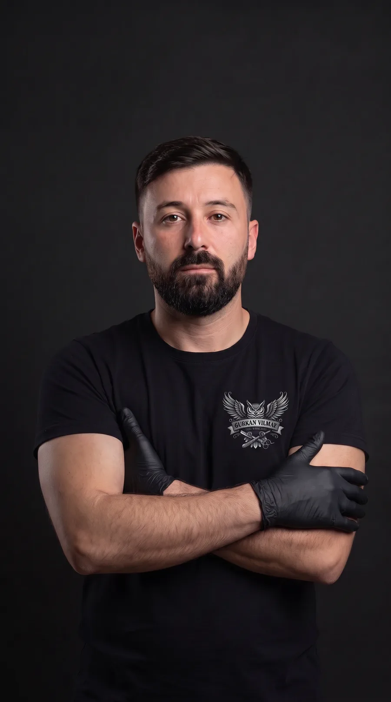
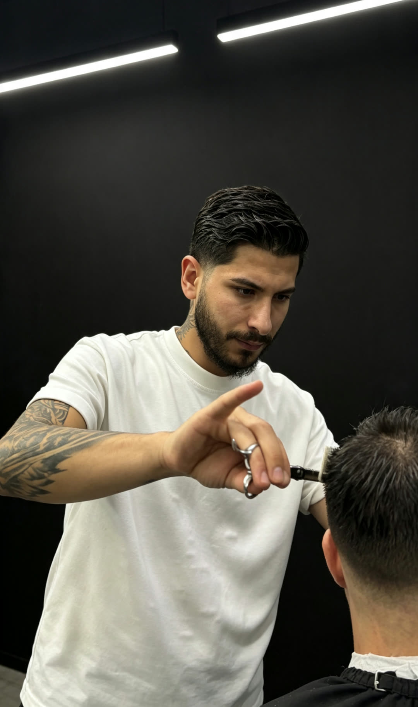
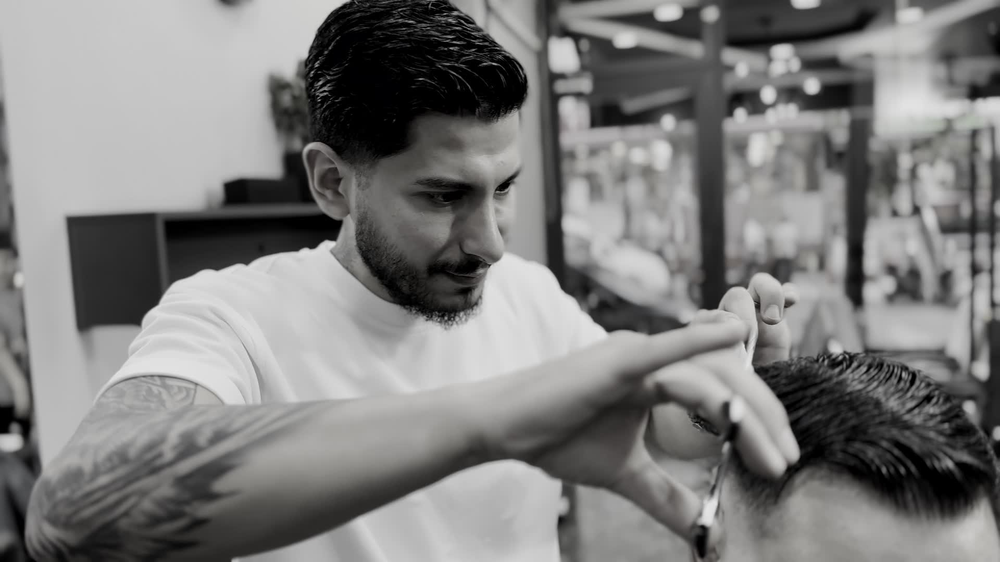

Berber
Kesim burada bir kalıptan çıkmaz. Saçın yönü, yüzün hattı ve nasıl taşımak istediğin okunur; makas ondan sonra açılır.
İyi kesim, aynadan kalkarken değil; üçüncü gün fark edilir.
Hacim ve düşüş yönü okunur, form yüzün geometrisine göre kurulur. Aynı kesim iki kişide aynı durmaz — durmaması gerekir.
Enseden yukarı çıkan ton farkı basamak bırakmaz. Geçişin nerede başlayıp nerede biteceği, saçın sıklığına göre belirlenir.
Sakalın ve ensenin hattı usturayla kapanır. Kesimi bitiren, bu son temiz çizgidir; iki hafta boyunca da o ayakta tutar.
İki koltuk, iki el. Berberini seç, gününü ve saatini kendin ayır — onay WhatsApp'tan gelir.


Makas açılmadan önce saç iki parmağın arasına alınır; uzunluk orada ölçülür, gözle değil. Kesimin tutarlı olmasının sebebi bu: her tutam bir öncekiyle aynı yerden kesiliyor.
Acele edilen kısım yok. Makasla makine doğru orana gelene kadar çalışılır, sonra ustura hattı kapatır.
Gürkan YılmazGürkan'ın son işleri. Hepsi dükkânda çekildi; ışığı toparlandı, kesimlere dokunulmadı.
Kesimden bakıma, uzun uygulama. Randevu ekranında hizmetini seçiyorsun; koltuk süresine göre ayrılıyor.
Yıkama, makas ve makine dengesinde kesim, yüz hattına göre şekillendirme ve ustura ile ense hattı.
Sakal formunun kurulması, elmacık ve boyun hatlarının usturayla netleştirilmesi, sıcak havlu ile kapanış.
Kesim ve sakal tasarımının birbirine göre kurulduğu tam seans. İki hat aynı anda çizildiği için bütünlük bozulmuyor.
Saç telini keratinle besleyip düzleştiren bakım. Kabarma ve elektriklenme gider, saç haftalarca düz ve parlak kalır.
Temizleme, gözenek açma ve maske. Tıraş sonrası tahrişi azaltır, cildi dinlendirir.
Saça kalıcı dalga ve hacim. Bukle boyutu yüz hattına ve saçın uzunluğuna göre seçilir.
Beyaz kapatma ya da ton değişimi. Renk ten ve sakalla uyumlu olacak şekilde seçilir.

Keskin bir ağız, sabırlı bir el ve doğru . Gerisi tekrarla geliyor.
Berberini seç, hizmeti belirle, boş saatlerden birini al. Dört adım, bir dakika.
Randevunu Oluştur